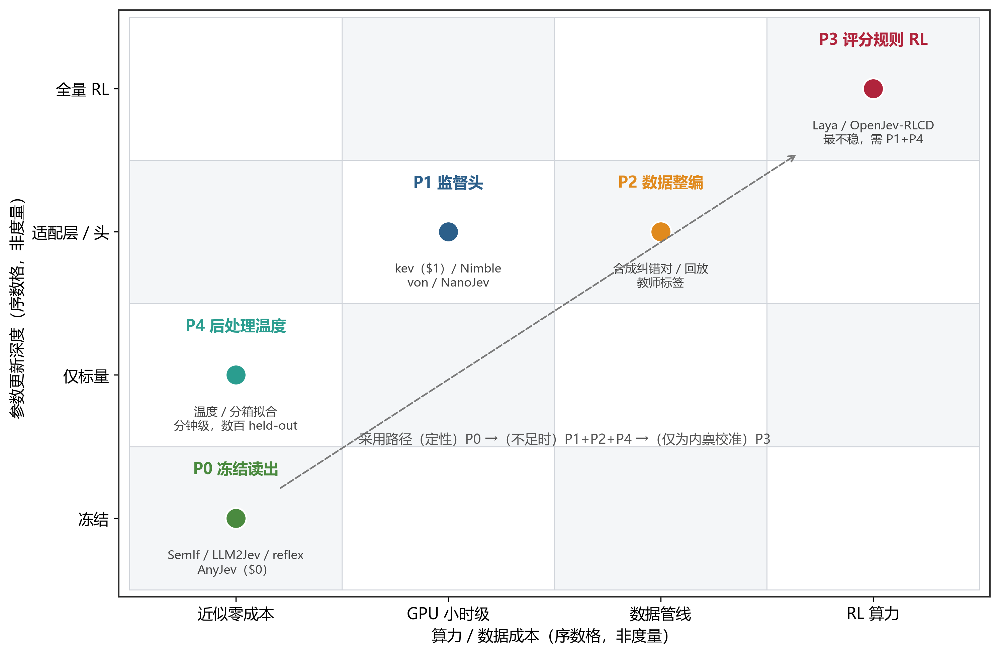
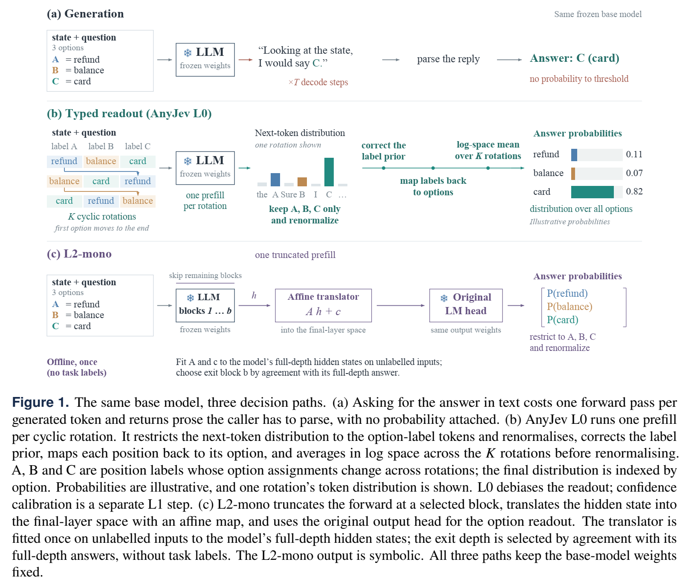
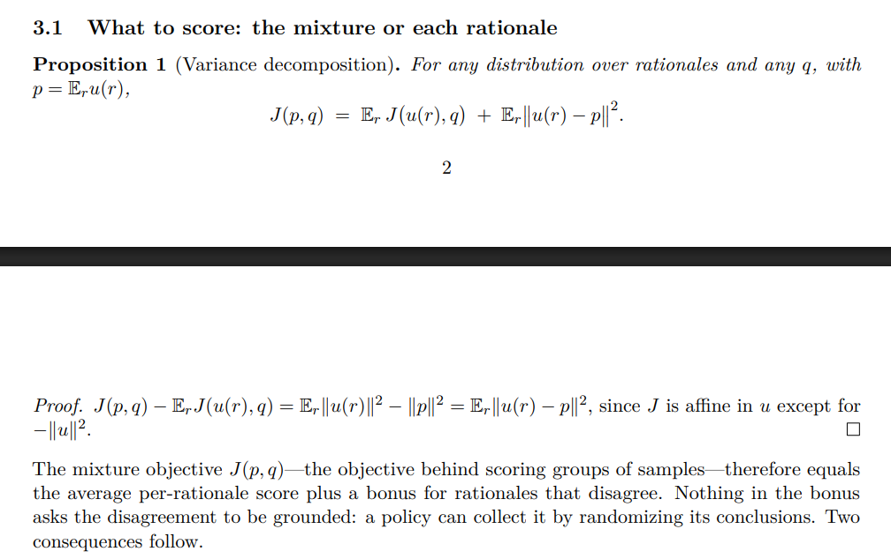
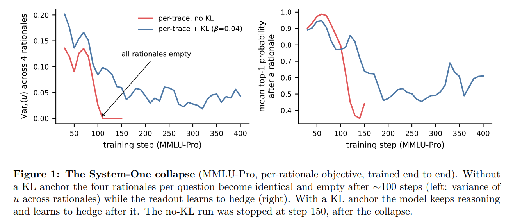
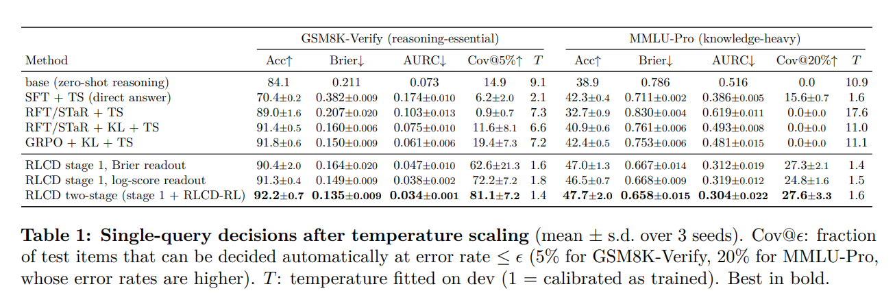
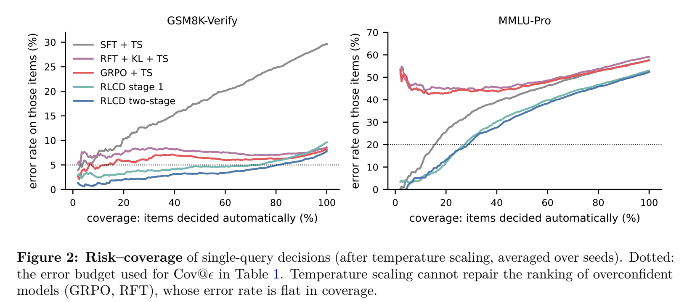
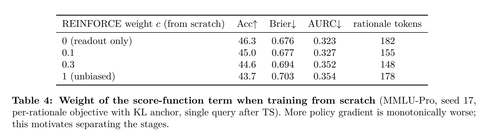
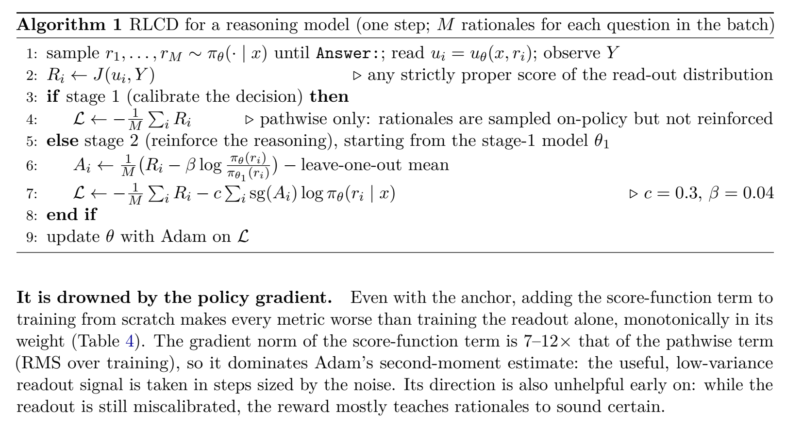

相当于综述论文当中的“框架”~~~
要将一个现成 LLM 变成 TDM 决策模型的具体做法是什么：
各自更新什么参数、用什么损失/奖励、数据从哪来、校准在哪一步做；
仅关注训练流程、数据配方与工程选择；
6.1、从冻结读出到评分规则 RL 的五类训练方法
公开复现生态内训练方法看似分散，可通过三个核心问题统一归类：
是否更新模型参数？
使用何种损失 / 奖励信号？
训练数据来源是什么？
基于这三个维度，可以把所有实现路线划分成五档范式：P0 成本最低，P4 为独立的后处理工序。如下所示，实际上大多数的开源项目的工程实现，多为组合范式，并非单一范式支撑。
| 维度 | P0 零训练读出 | P1 监督头 / 轻量微调 | P2 数据中心化 | P3 评分规则 RL（RLCD 家族） | P4 后处理校准 |
|---|---|---|---|---|---|
| 概括 | 冻结基座，仅修改读出协议 |
LoRA 替换或新增专用头，CE / 软 CE 监督 | 资源优先投入数据构造与过滤，常作为 P1/P3 前置 | 以严格适当评分规则构造奖励做强化学习 | 冻结模型，在留出集拟合少量标量参数 |
| 参数更新 | 否（冻结基座） | 少量（LoRA/adapter/ 专用头） | 一般不更新参数 （一般作为 P1/P3 前置） |
更新模型本体 / LoRA | 否 |
| 训练信号 | 无（前向即推理）； 可选负载温度 |
CE / 软 CE；可附加 Brier 正则 | 对比对、蒸馏、replay 样本 | 严格适当评分规则（Brier/spherical/log/RPS）作为奖励；GRPO/PPO/REINFORCE | - |
| 数据来源 | 只需评测集； 审计三件套 |
教师 argmax 标签或软分布标签 | 多教师交叉核对；公开集 replay；教师合成标注 | 可验证二元结果，不需要置信标注 | 数百条留出校准集，与训练集同分布 |
| 优缺点 | 优点：零训练成本；能力上限跟随基座；基座可快速替换；审计友好 缺点：原生概率通常未校准（SemIf 原文标注未校准）；对选项顺序敏感；推理延迟随基座线性增长 |
优点：算力成本可控（Kev 4B 约 $1）；单卡可训练；推理延迟 10ms
量级；软标签训练自带基础校准 缺点：单纯 CE 不保证概率校准，几乎都需要叠加 P4 后校准；判别上限受教师质量与数据集约束；PACT 证明仅改动损失项容易损害稳定性 |
优点：直接决定判别任务的性能上限；对比对、证书结构可被 PACT
损失复用，数据层与算法层连续 缺点：会完整继承教师偏差；合成数据管线实现细节大多不开源 |
优点：直接优化概率校准目标；理论上收敛到诚实概率；无需昂贵的置信标注 缺点：RL 训练不稳定（System-One collapse、score-function 噪声 7–12× pathwise）；纯 P3 独立成功案例极少（Laya 原文说明需要搭配 P1）；不适用于本质随机（aleatoric）任务 |
优点：成本极低、快速部署；不改动基座能力；可叠加在 P0/P1/P3
之后 缺点：强依赖留出集分布；分布偏移场景容易失效；部分题型会出现校准反向恶化（Score 任务） |
| 典型成本 | 0 | 单卡小时级 | 管线人力与算力成本 | RL 算力，方差大、稳定性差 | 分钟级 |
【如下为 P0–P4 训练范式坐标系】

横轴为算力 / 数据成本（序数定性），纵轴为参数更新深度（序数定性）；
坐标仅用于定性归类，无量纲；
通常 P0 → 效果不足再叠加 P1+P2+P4 → 需要内禀校准再引入 P3；
P4 后处理校准与 P0–P3 正交，可叠加在任何一档之上；
6.1.1、P0：零训练读出（frozen readout）
流程：选取现成因果大模型基座 → 将决策问题序列化，约束答案落在单 token 空间（字母标记 A/B/C 或候选拼接 prefill 打分）→ 在答案位置 logits 上取出对应选项分量做 softmax →（可选）在业务负载上拟合温度系数。
全程不更新任何模型参数。
关键算法：
单 token logit 读出（SemIf 范式）：
prompt 约束模型仅输出单个字母，取首生成 token 位置 logits 向量，提取对应选项 token 分量做 softmax；
强制校验选项必须为单 token、分词边界合法，非法候选直接拒绝；
prefill-only staged 候选评分：所有候选共享 state 前缀，先对真实候选构建 Radix 缓存并复用，冷请求也可复用前缀表征【github.com/Yinsongxu/LLM2Jev】。
双选项顺序平均：同一 state 下使用两种候选顺序推理，结果取平均，低成本同时提升准确率与顺序鲁棒性【github.com/kshetrajna12/reflex】。
分级去偏（AnyJev L0/L1/L2）：
L0 = 每个候选位置循环 K 次推理，对数空间聚合、去除标签先验，零标签消除位置偏置；
L1 = L0 + 温度缩放；
L2 = 在中间层隐状态闭式求解读出头（100–300 标签闭式求解，非梯度训练）；
论文 2610.00831， github.com/nokia-applied-research/AnyJev

代表性工作（论文与仓库并列）：
SemIf-OpenJev（冻结 Qwen3.5-4B）：验证 “只读候选 logit、不做自回归生成” 无需训练；读出路径耗时 1.023s，对比自回归 JSON 生成 5.332s（RTX3090，21 条二值判据）【github.com/TheoLeeCJ/SemIf-OpenJev】；
LLM2Jev（Qwen3.5-4B，SGLang/Transformers/MLX 三后端）：JevBench 公开集 231 项 76.2%，P50 延迟 48ms；对照官方 Jev 1.13.0 P50 652ms【论文 2610.02076 + github.com/Yinsongxu/LLM2Jev】；
reflex（冻结 Qwen3.5-4B）：把 “是否需要训练” 作为假设验证；
实测 LoRA 混合微调、27B 教师蒸馏仅在分布内提升性能，长模糊输入场景下泛化能力下降，最终上线冻结读出方案；
JevBench public hard ECE 0.081；MMLU1200 题温度校准后 ECE 由 0.090 降至 0.039
jev-visual：将范式拓展至多模态，共享 prefill、fork 缓存图像 state，无训练、无内置校准声明
如下为基于当前资料梳理的P0 读出协议谱系：
| 读出形态 | 实现方式 | 去偏手段 | 代表项目 |
|---|---|---|---|
| 单 token 字母 logits | Prompt 约束输出单个字母，取首 token 选项分量 softmax | 单 token + 分词合法性校验 | SemIf、jevk5（蒸馏后） |
| prefill-only staged 评分 | 候选共享 state 前缀，Radix 缓存复用 | staged candidate scoring | LLM2Jev、openjev-sglang |
| 双选项顺序平均 | 同一输入两组候选顺序推理，结果取平均 | 顺序平均 | reflex |
| 截断层 + 闭式头 | 截断至中间隐状态，闭式解读出头 | L0 旋转去先验 / L2 闭式头 | AnyJev L0/L1/L2 |
| 多模态 fork 缓存 | 共享 prefill，分支缓存图像 state | 无原生去偏 | jev-visual、LLM2Jev 多模态 |
优缺点与适用场景：
优点：零训练成本；性能上限跟随基座能力；基座可随时替换；审计友好（SemIf 固定版本、prompt SHA256、原始 logits 随结果输出）。
缺点：原始读出概率通常未校准（SemIf README 明确标注返回概率是候选条件概率，需要业务侧校准）；天然对选项顺序敏感；延迟随基座规模线性上升。
适用：快速验证方案、低校准要求的路由场景、在已有大模型部署上低成本附加决策能力；
- reflex 的结论具备规范意义：它是通过受控对照证明，在其测试分布上微调反而损害泛化，确立了优先跑零训练基线，再判断是否投入训练的工程范式【github.com/kshetrajna12/reflex】；
争议点：零训练读出是否 “够用”
SemIf、reflex 认为冻结读出已经接近官方 Jev 水平、微调容易损害泛化；另一派（LLM2Jev）则报告了 4B 基座零训练读出经后处理后 ECE 可达 0.057【2610.02076】；
分歧根源在校准定义与测试负载：
SemIf 输出的是未校准条件分数，而 LLM2Jev 的低 ECE 结果是在自有负载、叠加后处理得到；
当切换到异源 / 困难负载时，Nimble 在 Score 题型上出现了 ECE 反弹、Laya 对于高棉文高置信错判 —— 这预示着零训练概率不能直接作为置信度；
共识：P0 适合想法验证与路由，一旦要将概率用于自动化决策，必须叠加 P4 业务侧校准；
关于 AnyJev 方案：其去偏是按标签量阶梯投入的方案：
L2 在中间隐状态闭式求解读出头（100–300 标签闭式求解，开销低于一次前向）。实测 LocalLLaMA typed-decisions 基准：Qwen3-4B（24/36 截断）0.786、Qwen3-32B（52/64 截断）0.798，高于官方 Jev 的 0.727【论文 2610.00831 + github.com/nokia-applied-research/AnyJev】；
工程启发：冷启动决策端点时，可以随可用标签量逐步增加投入：L0 零标签消除位置先验 → L1 百级标签温度缩放 → L2 闭式头，不需要一开始就训练基座；
6.1.2、P1：监督头 / 轻量微调（SFT）
流程：准备 (state, question, 选项集，标签) 样本 → 冻结基座 + LoRA / 替换专用头（pointer head / 候选头 /slot softmax）→ 交叉熵或软交叉熵训练（可增加 Brier 正则）→ 留出集选最优 checkpoint →（几乎总是搭配 P4 温度拟合）。
核心设计原则：按输出统计结构设计读出头
如 NanoJev 将决策头拆分为三类，和官方 Jev Choice/Score/Noul 三原语对齐：
Choice：2–255 候选，共享打分标量 + set attention + softmax
Boolean：单命题，sigmoid 输出真概率
Ordered Score：2–10 档有序评分，期望加权支持非整数档位
github.com/TianyuCodings/NanoJev
将 proper scoring 写进 SFT 损失，也在置信度相关工作当中有所体现：
ConfTuner（论文 2508.18847）：改造了 Brier 损失用于 verbalized confidence，\(\ell(q,y)=\sum_i q_i(y-i/N)^2\)，属于把校准纳入监督损失、而非依赖后处理的最轻方案；
PACT（论文 2609.35865）：则对单 token typed-decision 的目标进行改进，直接替换 Nimble 推理后端，将总损失设置为 \(L=L_{CE}+0.5L_{CF}+0.5L_{PC}+0.2L_{NR}+0.3L_{EMD}\)，其中反事实 pair margin \(L_{CF}\)、证据缺席无偏约束 \(L_{NR}\)是核心，论文实验移除\(L_{NR}\)后 flip rate 由 8.0% 上升至 17.6%；
结论：PACT 不提升主指标准确率（84.6 vs Nimble 85.2），收益在于顺序偏置、有序 rubric 误差、种子稳定性；
P1 代表单元汇总：
| 项目 | 读出 / 头结构 | 损失函数 |
|---|---|---|
| kev | Qwen3.5 + LoRA r16 + pointer head | 正确答案交叉熵，基座冻结 |
| decider | Qwen3.5 各尺寸 + 答案槽隐向量投影 | 交叉熵微调 |
| openthai | Qwen3.5-0.8B，移除 vision encoder，LM 头替换 256 路 slot softmax | CPT 预训练 → 决策 SFT → 后校准 |
| NanoJev | Qwen3-0.6B，三分支决策头：Choice softmax / Boolean sigmoid / Score 期望加权 | 标准交叉熵，备 Brier/paired-reward 变体 |
| PlayJev | Qwen3.5-0.8B-Base 全量微调，像素→动作概率 | 行为克隆 SFT（1epoch lr2e-5）+3 轮 DAgger |
| von | ModernBERT-large + Option-Marker 头，选项间零注意力泄漏 | listwise softmax CE + Brier |
| agent-jev | Qwen3-0.6B 移除 LM 头，置换等变候选头 | 软交叉熵 + 0.1× 候选求和 Brier |
P1 的两条重要工程教训：
多问打包在 Qwen3.5/3.8 上失效（kev 事后回顾）：
理想方案将 state + 多问题拼成单序列，block-causal mask 隔离问题；但 Qwen3.5/3.8 内 Gated DeltaNet 循环线性注意力会无视 mask、跨分支信息泄漏；
工程回退方案：每个问题独立成行、state KV 只计算一次并复用；该方案和 Jev 逆向形态概率差 < 4e-6【官方
仓库 github.com/jaredpalmer/kev，所有在 Qwen3.5/3.8 做多分支并行决策必须阅读！！！
必须先证明微调优于零训练基线再投入训练（decider）：
decider 使用现成 instruct 权重 + 仅拟合温度的零梯度基线，在 Decision Index 上排 #2/#8，而训练后的 4B/2B/35B 专训模型反而低于基线；
项目指出：
the base model sets most of the score
- 这个教训基本和 reflex 结论互相印证：P1 的增益不是天然存在，必须对照“冻结基座 + 读出 + 温度”基线验证；
优缺点与适用：
优点：成本可控（kev 4B H100 训练约 $1）、单卡可训练，延迟可做到 10ms 级别，软标签训练自带部分校准属性；
缺点：
性能上限由教师与数据覆盖决定；
单纯 CE 不保证校准，因此几乎所有 P1 方案都搭配 P4；
PACT 对照显示纯 CE 训练稳定性差，附加结构损失才可以修复；
适用：业务分布稳定、计划自建小决策模型的团队；规范流程为先跑 P0 基线，验证微调正向收益再训练。
6.1.3、P2：数据中心化（data-centric curation）
P2 不是特定损失函数，而是预算优先投入数据构造，而非网络结构的工程立场。
绝大多数 P1、P3 项目都将其作为前置工序。
它把生态里核心 know-how（数据构造方案）显性化，也是 decision-head-rlcd 受控实验 “泛化来自数据而非算法” 之后，社区形成的共识。
流程：构造对比样本对 → 多教师交叉标注 → 公开集 replay → 合成 / 教师标注 → 过滤查重 → 按 case 划分训练 / 验证集。
目前的方案汇总：
| 项目 | 数据工序 | 规模 | 标注与来源说明 |
|---|---|---|---|
| Nimble | 对比式四步法： - 修改焦点事实翻转标签； - 删除证据后答案不可知； - 过滤、去重； |
2676 训练 / 324 留出；Choice 856/146、Noul 888/114、Score 932/64 | 全部模型自标，无人工复核 |
| jevk5 | 双教师蒸馏（Qwen3.6-27B + GPT-6 Luna）交叉核验； 公开集 replay |
17408 教师题 + 30052 replay 样本，26 种公开划分 | replay 仅使用训练划分，对 test/val 做 8 词查重 |
| decider | 公开集混合 + Qwen3.5-27B 本地教师标注 | ~95 公开集 + 形状增强 | 27B 教师标注与通用标注一致性仅 72% |
| metask-jev | 教师软标签合成 + 等价视图增强，同一 state 多视图共享软标签 | 配方未公开； 13 子集宏平均 79.6% |
管线骨架公开，详细合成方案 withheld |
| PACT | 复用 Nimble 对比对 + 证书结构，转化为无需新增标注的损失 | 2676 记录 /1338 pair /34 source family； holdout 324/162 pair |
不新增标注，消费已有对比数据集 |
Nimble 对比式整编的机制：目标是迫使模型学习判别证据，而不是表面文本捷径
首先在同一段 state 内修改≤8 个词的焦点事实，构造标签翻转样本对；
然后删除任意一条证据，答案应当变为不可知，给每个 pair 附带机器可校验 certificate；
普通 CE 独立看待单样本，无法利用 pair 和 certificate 结构；
类似的，PACT 正是把该结构转化为\(L_{CF}\)（pair margin）、\(L_{NR}\)（证据缺席约束），P2 数据结构和 P1 损失函数在这里衔接。
优缺点与定位：
优点：直接决定判别上限；只要可以获取教师模型就可以落地；对比对、证书结构可以被 PACT 这类损失复用，数据与算法衔接。
缺点：教师偏差会完整继承；agent-jev 备注：榜单提升不等于业务效果提升；decider 自曝教师标注不一致；Nimble 全自标，存在模型系统性错误重复风险；合成管线是各家核心壁垒，很多 builder 不开放。
定位：P2 不是可选项，是 P1/P3 的前置必要环节。
6.1.4、P3：适当评分规则强化学习（RLCD 家族）
这里需要先强调：
P3 是官方 Jev 采用路线（RLCD = Reinforcement Learning for Calibrated Decisions），但官方只公开了训练目标，完整方案是闭源的，且 RLCD 仅是 TypeSafe 的产品命名；
与之同源的学术方案包括：
RLCR（Brier 惩罚 GRPO，论文 2507.16806）；
Rewarding Doubt（对数评分 PPO，论文 2503.02623）；
相应的开源实现包括 Laya、OpenJev-RLCD、decision-head-rlcd 尽管都自称 RLCD，但也仅仅是共享严格适当评分的数学内核，在具体的奖励构成、数据组织以及训练细节上均有差异。
公开的复现流程：模型输入 (state, question) 输出分布q → 使用严格适当评分规则（Brier / 球面 /log/RPS），基于可验证真值y计算奖励 → 策略梯度更新（GRPO/PPO/REINFORCE）→ 收敛后叠加温度缩放。
之前数学基础3.2节已经证明了：严格适当评分规则的期望最小化不动点就是真实概率。
RLCD 家族方案汇总表如下：
| 单元 | 奖励组成 | RL 算法 | 数据/规模 | 公开程度 |
|---|---|---|---|---|
| Jev 官方（闭源） | 官方声明以严格适当评分规则做校准决策训练 | 未公开 | 官方称全合成数据 | 目标公开、配方未公开 |
| Laya | \(Reward =
(S_{\log}+0.5\,S_{\mathrm{sph}}-1.0\,S_{\mathrm{rps}})\)（log/球面/RPS
三适当评分）； logit 层高斯探索、每组 G=8、σ 1.0→0.3 |
GRPO 式组基线 \(A_i=R_i-\bar
R\) \(L=-\mathrm{mean}(A\log p)\) |
Kaggle 免费 2×T4 上 DDP | 奖励公式与 σ 调度，详细说明见：https://dev.to/nandakishor\_m\_6cc0adfde9f/i-built-non-autoregressive-decision-models-a-year-ago-then-a-frontier-lab-called-it-a-18me |
| OpenJev-RLCD | shifted Brier \(J(u,y)=2u_y-|u|^2\)； 两阶段：stage1 pathwise 梯度训读出，stage2 REINFORCE |
score-function，c=0.3，leave-one-out 基线，KL anchor β=0.04 |
Qwen3-1.7B；ChaosNLI/MMLU-Pro/GSM8K-Verify；每任务 400 步×3 seeds | 论文：2609.38850 + github.com/ZimmyGao/openjev-rlcd |
| agent-jev（监督式近邻） | 软 CE + 0.1× 候选求和 Brier，Brier 作为 SFT 正则，非 RL | 监督微调 | Typed Decisions | github.com/malevrigns/agent-jev |
| decision-head-rlcd | RLCD：对选项字母 logits 加高斯噪声作动作、leave-one-over-8 作基线 | RLCD one-pass | Qwen3.5-4B + 4.9M LoRA(r8)，32000 条 typed
decisions，lr 5e-5 / 2000 步； 三 seed 固定算法、只变数据覆盖度 |
github.com/Astro-Han/decision-head-rlcd |
| RLCR（学术版） | \(R_{RLCR}=\mathbb{1}[y=y^*]-(q-\mathbb{1}[y=y^*])^2\)（Brier 惩罚） | GRPO | Qwen2.5-7B / HotpotQA | 论文：2507.16806 |
【深入解析与原理】
基于严格恰当打分规则（proper scoring rule）的校准强化路线（RLCD/RLCR），它和普通 0/1 二元奖励 RLVR/GRPO 构成一组核心对照：二者都使用可验证的答案正确性作为监督信号，但优化目标完全不同，直接决定模型是 “学会答对” 还是 “学会诚实报出真实胜率”。
恰当打分规则（proper scoring rule）：只有当模型输出的置信概率等于这件事真实发生频率时，期望奖励才达到最优；谎报高置信、刻意保守都拿不到最优分；
经典：对数分（log score，无界）、Brier 分（平方误差，有界）、球面分；
0/1 二元奖励不是恰当打分规则—— 它只奖励最终对错、不惩罚过度自信，天然鼓励模型押极端概率【2507.16806，RLCR】
两种不确定性
认知不确定性（epistemic）：模型知识不足、推理链条有缺口；可以通过多路径推理、增加 rationale 消除，适合 P3 校准路线;
偶然不确定性（aleatoric）：任务本身存在标注分歧、答案不唯一；上限由标注噪声决定，此时再做 RL 校准收益有限，最优目标退化为普通交叉熵 CE 监督;
P3 路线的核心论据及其实规则选型：
核心论据：P3 不追求显著拉高准确率，而是在准确率持平前提下，大幅提升可控自动放行比例，把置信度从 “后处理补丁” 变成模型内禀属性。
在选择打分规则上，【2503.02623】Rewarding Doubt 选用对数打分（log score）：
《Rewarding Doubt: A Reinforcement Learning Approach to Calibrated Confidence Expression of Large Language Models》
论文：
提出了一种新的强化学习方法，通过将信心估计建模为一个赌博游戏，激励模型在训练过程中学习校准其信心估计。具体来说，模型在给出答案的同时预测一个信心分数，奖励函数根据答案的正确性和预测的信心来计算奖励；
奖励函数的形式即为对数分数，论文也通过数学证明，当模型预测的信心 \(\hat{p}\) 与实际正确性概率 \(p^∗\) 相等时，奖励函数达到最大值，从而优化了完美校准；
- 对数分是严格 proper，但无界，也就是说模型可以通过输出接近 0 的置信拿到很好的期望分数、同时放弃答对，存在明确 reward hacking 漏洞；
Proper（恰当）：当真实的信念分布就是 \(p^*\) 时，期望得分最优的策略就是如实输出 \(p^*\)。 简单来讲：如果模型内心真实概率是 \(p^*\)，它不会靠撒谎、篡改概率拿到更高分数，也就是激励对齐 ——说真话收益最高；
Strictly Proper（严格恰当）：更强一些，也就是只有输出等于真实分布\(p^*\)的时候，才能拿到最优期望得分—— 任何偏离真实信念的概率，期望得分一定变差，不存在多个不同概率都能拿到同样最高分；
这是 P3 路线的核心刚需：我们要训练模型校准不确定性，而不只是选对答案；只有严格 proper 的奖励，才能从数学上保证：最优策略 = 诚实输出自身真实置信度；
例子：普通的 0-1 奖励（答对 + 1，答错 0，也就是 GRPO/RLVR 常用二元奖励）不是 proper
一个事件真实胜率 0.6，模型输出 p=0.9、赌它是 1，期望收益更高；
模型有很强动机过度自信、虚报置信，这就是为什么普通 RL 容易校准崩坏、ECE 飙升。
所谓无界，即得分本身的取值范围没有上下界（或者单侧无界），可以趋向负无穷 / 正无穷；
对数得分的二元形式为：$R(a, \hat{p}, j) = \begin{cases} \log(\hat{p}), & \text{if } j(a) = 1 , (\text{correct}) \ \log(1 - \hat{p}), & \text{if } j(a) = 0 , (\text{incorrect}) \end{cases}$
当模型给真实标签分配的概率 \(p \to 0\)，\(\log(p)\to-\infty\) —— 这就是严格 proper，但无界；
对数分的两条性质打包：
严格恰当 strictly proper：期望得分 \(\mathbb E_{y\sim p^*}[S(p,y)]\) 在 \(p=p^*\) 处唯一取最大值；适合做不确定性校准的奖励，理论最优。
无界 unbounded：一旦模型对正确项给出极小概率，损失（负的得分）爆炸，数值上会出现巨大梯度，训练不稳定、方差极高【这也是上边说的“RLCD / 基于 proper 评分规则的 RL 方差大、稳定性差”的根源！】
后续工程选型（RLCD、RLCR）优先换成 Brier、球面这类有界 proper score，在诚实校准和任务正确率之间做约束平衡；
【扩展】和 Brier 得分做对照：
Brier 得分（布里尔分）：\(S(p,y)=-(y-p)^2\)
严格恰当
有界：二元场景得分区间 \([-1,0]\)，不会爆炸
代价：Brier 是二次的，尾部低概率区域的梯度强度弱于对数分，对极端不确定性的区分能力弱于对数得分
| 得分规则 | Strictly Proper | 有界 / 无界 | 核心取舍 |
|---|---|---|---|
| 对数得分 Log Score | 是 | 无界 | 理论最优激励；尾部梯度爆炸、RL 训练震荡难收敛 |
| Brier 得分 | 是 | 有界 | 激励稳健、工程友好；对极小概率事件区分力度偏弱 |
| 0/1 二元奖励 (GRPO) | 不是 | 有界 | 只优化准确率，鼓励虚报置信，校准效果差 |
严格 proper = 数学上激励模型不要吹牛、如实报概率；
无界 = 一旦猜错且极度不自信，惩罚会无限大，训练很难稳住;
- 【2507.16806】RLCR 则在二元正确性奖励之外叠加 Brier 校准项，属于有界 proper score，进一步实验修正了一个流传很广的片面认知：
“0/1 奖励 RL 一定会恶化校准” 只在分布外 OOD 平均意义上成立；在同分布 in-domain 场景，RLVR 也有可能小幅降低 ECE；
- RLCR 是这批方案里唯一在 OOD 同时保住准确率、显著改善校准的方案；
- 【2609.38850】OpenJev-RLCD 指出当前的置信度校准当中的两条主流路线存在局限性，并解释了为什么流行的多样本验证 RL（RLVR/GRPO）会破坏校准、鼓励矛盾推理，提出了一个“Calibrate-then-Reinforce（先校准，再强化）”的两阶段的稳定 RLCD 工程流程；
现有 GRPO/RLVR 用混合打分，数学上自带奖励虚假分歧的项，造成过度自信；如果换成理想的单推理 Brier 打分直接端到端训练，模型又会走捷径抛弃推理、直接输出保守分布（System‑One 坍缩）；为此本文提出先冻结推理、校准读出头，再放开推理做 RL 的两阶段 RLCD 方案；消融实验（命题 1、图 1）验证了失效机理，主表格在数学、MMLU-Pro、GSM8K 上验证，这套方案可以得到既会推理、置信又诚实的模型，大幅提升选择性预测指标。
当前两条主流路线的局限
SFT + 事后温度缩放（Temperature Scaling） 监督微调之后，单独用温度参数抹平置信分布。
缺点：属于事后补丁，没有从推理过程本身学习不确定性；分布偏移、分布外场景很容易失效。
基于可验证奖励的 RL（GRPO / RLVR / STaR） 奖励只有二元：答案对 = 1，错 = 0，在同一个 prompt 上采样多条推理，对样本集合打分。
核心结论：这种对混合样本分布打分（mixture objective），数学上自带一个方差奖励项：它会奖励多条推理互相矛盾、结论不一致 —— 模型学会 “故意猜得不一样” 拿奖励，推理质量崩坏，越训越盲目自信！
论文用方差恒等式证明：RLVR 本质就是这个混合目标，只是去掉了显式多样性项：
如果用“多条推理先混起来、再打分”（混合目标，GRPO/RLVR 的做法），总收益天然可以拆成两块：
第一块：每条推理单独打分的平均分（这部分是我们本来想要的）
第二块：方差奖励—— 只要不同推理给出的答案分布不一样，就能白拿额外收益
也就是说，对一批推理样本先平均再打分，等价于：给平均表现打分，外加一笔 “鼓励大家互相唱反调” 的奖励，随机乱猜分歧也能赚奖励 —— 这将导致策略只要随机给出不一样的结论，就能拿到这笔加分！

这解释了典型现象：二元奖励抹除了不同推理路径之间分歧的奖励项，模型梯度会单向推向 one-hot 极端分布，也就是过度自信；
通俗理解：只要猜对就拿满分，模型没有任何动力去说 “我把握不大”；它会快速学会赌一个答案、报很高置信；
核心理论与核心失效模式（对两种不同的打分范式进行了分析）：
范式 A：混合样本打分（GRPO/RLVR）【论文命题 1】
对同一个问题，采样多条推理 \(r_1,r_2,...\)，把所有推理后的答案分布混合成一个混合分布再打分：\(J(\mathbb{E}_r[u(r)]) = \mathbb{E}_r[J(u(r))] + \mathrm{Var}_r(u)\)
左边：混合目标（GRPO/RLVR 实际优化的目标：先把多条推理的分布取平均，再打分）
右边第一项：每条推理单独打分的均值（我们想要的单推理目标）
右边第二项：方差 bonus，对推理之间的分歧进行奖励
额外多出的方差项 \(\mathrm{Var}_r(u)\)给出的奖励，不区分分歧来源：
只要不同推理的结论不一样，就能拿到额外奖励；
不需要这个分歧是合理的，随机瞎猜制造分歧也能获得奖励：
合理分歧：信息不足、多条推理走不同合法逻辑路径；
虚假分歧：模型随机抖动、无依据猜不同答案；
这样，优化混合目标的策略最优解不是诚实后验（ “每条推理都诚实给出真实后验”），而是主动制造分歧、不一致，最终表现就是过度自信、校准崩坏；
结论：混合打分范式本身在数学上内置了一个偏向矛盾推理的激励，这是 GRPO/RLVR 校准差的根源，不是调参、数据问题
- 范式 B：单条推理独立打分（RLCD）【及其失效模式】
每一条独立推理链 r 单独读出它自己承诺的答案分布\(u(r)\)，单独用严格恰当得分规则（strictly proper scoring rule，论文主要用 Brier 得分）打分，不混合多个样本。
恰当得分规则的性质：只有当模型输出的概率等于真实后验概率时，期望得分最优；天然鼓励校准。
理论最优：对每一条推理，\(u(r)\) = 该推理条件下真实正确概率。
直接裸端到端进行单推理优化有两个工程失败模式：
论文进行了 System‑One 坍缩实验，在MMLU-Pro上，为每条单独的推理进行Brier打分，端到端联合优化推理生成头 + 概率读出头；每个 prompt 采样 4 条推理，设置了两组对照：有无 KL anchor（KL 约束，约束策略不要远离 SFT 参考模型）

解读：在没有 KL 锚定项（KL anchor）的情况下，每个问题对应的 4 条推理链，在约 100 步训练后会变得完全一样、内容空洞（左图：不同推理之间u的方差）；而读出头学会了模糊避险（hedge）。 加入 KL 锚定项后，模型能够持续做推理，并在推理完成之后再学会模糊避险。 无 KL 锚定的实验在坍缩发生后，于第 150 步提前终止
No KL anchor（无 KL 正则）
~100 训练步：方差快速掉到接近 0，推理链全部变得简短、无实质推导（System‑One 坍缩：抛弃慢思考 System Two 链式推理，退回直觉捷径）；
同步：读出头快速学会 hedge，输出保守平坦分布拿到很好的 Brier 分数；
本质捷径：模型发现不需要做推理，直接输出一个保守分散分布，就能拿到最优奖励。Brier 得分好看，但推理是空壳，属于伪校准。实验 150 步提前终止。
With KL anchor（带 KL 正则）
方差维持在合理区间，推理保持多样性、保留推理步骤；
hedge 后置：先完成推理，再由读出头表达不确定性，这是 RLCD 期望行为。
策略梯度方差巨大，训练震荡、不稳定；
模型直接学 “放弃推理”，不写思考过程，靠简单分布拿稳定奖励【坍缩、未校准】；
哪怕目标函数选对（per-rationale + proper scoring rule），直接端到端联合训练推理和读出头，依然存在另一个严重捷径：丢弃推理，直接用平坦分布刷 Brier 指标；
KL anchor 可以抑制这个捷径，但 KL 是一把双刃剑：太强会锁死策略，推理无法优化；太弱抑制不住坍缩；
因此论文提出了分阶段训练配方 Calibrate-then-Reinforce；
- 论文提出了一个两阶段的训练方法：Stage1 先用恰当打分规则把读出头校准到位；Stage2 再低权重 RL 微调（论文配置 c=0.3，β=0.04 的 KL 约束），用 KL 锚守住原有推理能力，防止坍缩；
阶段 1：监督校准阶段（固定推理学习置信输出）
模型生成推理 rationale 之后，训练它读出的后验概率分布符合 Brier 最优；
推理生成策略冻结不动，只训练后面的概率读出头 readout；
损失：Brier 恰当得分；
目的：教会模型在一段推理写完之后，怎么诚实表达自己的不确定性，先把 “决策头” 校准好，避免 RL 阶段直接崩坏。
教会模型：给定一段固定推理文本之后，如何输出匹配这段推理不确定性的诚实概率分布；
为什么可以防坍缩：推理侧被锁死，模型没有办法删掉推理；它只能在已有推理的基础上学习 hedge；
阶段 2：RL 强化阶段（优化推理本身）
放开推理策略，继续用同一个 Brier 得分作为奖励（per-rationale，不混合多条样本），去优化推理生成过程；
必须搭配 KL anchor 正则（约束策略不要跑太远，进一步辅助防止坍缩）；
优化目标：生成更高质量推理，同时在推理之后维持良好校准；
目的：让模型学会生成既能提高正确率、同时又保持置信可信的推理链，而不是只追求猜对。
方案设计的基本思路：先固定推理，把 “什么是合理的不确定性表达” 教给读出头；再去优化推理，此时模型已经知道 hedge 是依附推理的输出，而不是替代推理的捷径。
关键设计：奖励不是 “猜对”，而是推理之后给出的概率分布本身的统计诚实度。
通过在 MMLU-Pro（多选知识）、GSM8K（数学推理） 对照实验进行了验证与消融评估：
普通准确率掩盖了置信失效问题，论文核心评价指标是风险 - 覆盖曲线 AUC（risk–coverage AUC）（在5%的放行错误上限Cov@5%）：
覆盖度 coverage：模型敢自动放行多少样本（置信高于阈值）；
风险 risk：放行样本里的错误率；
好模型：在很低的错误上限下，尽可能放行更多题目；
- 核心结果：

整体准确率：RLCD 与 GRPO、SFT 基线持平或小幅占优，不会为了校准牺牲正确率；
核心指标风险 - 覆盖 AUC：RLCD 显著高于所有基线；

GSM8K 定点测试（放行错误率上限 ≤ 5%）：
GRPO+KL+TS（0/1 正确性奖励）：Acc 91.8，Cov@5%=19.4%；为勉强校准，后处理温度要拉到 T≈7
RLCD 两阶段：Acc 92.2（统计上和 GRPO 接近，没有显著提升），Cov@5%=81.1%；训练结束本身已经接近校准，T=1.4
前提：必须规避图 24 的坍缩。如果直接跑无 KL 端到端 RLCD，表格里这个优势完全消失，模型只会输出空洞推理 + 保守分布，OOD 下风险会失控。
- 消融实验来对打分、训练方式、KL锚点以及评分函数进行消融：
打分范式：mixture objective /per-rationale objective（验证命题 1）
训练方式：端到端联合训练 / Calibrate-then-Reinforce 两阶段
是否带 KL anchor
是否使用恰当得分 Brier，或二元答对奖励
原文结论:
- 核心函数权重（core-function weight）。表 4：如果不做阶段拆分，只要给得分函数项分配正向权重，效果就会变差，这和梯度稀释（gradient-dilution）的诊断结论吻合。

只预热读出头是不够的：读出头先训 200 步、再做 200 步强化（两者都从头开始训练），最终性能和只训练读出头的基线持平；表 2 里看到的收益，必须建立在读出头已经充分收敛的前提下。
由谁来给推理链打分（Who scores the rationale）：用一份冻结、已经校准好的独立读出头副本打分，而不用策略自身的读出头打分（目的是防止两者互相适配、共谋 co-adaptation），在 GSM8K-Verify 上效果反而更差（随机种子 17：Brier 上升 0.021，AURC 上升 0.030）；表现为推理变短，并且策略自带的读出头变得过度自信。
阶段 2 不加 KL 锚定项（No KL anchor in stage 2）：大约 330 步之后推理发生退化（模型不再书写推理标记，反复重复结论凑够长度上限）；基于读出头的奖励本身看不到推理链的格式、结构，因此 KL 锚是必需的;
显式概率 RLCD（Explicit-probability RLCD）：对于没有推理链、直接输出概率打分的模型（直接打分器），带显式分布的 RLCD，其期望梯度等价于 Brier 损失；在 CLINC150、ChaosNLI 数据集上，它始终无法超越交叉熵（CLINC150 准确率 94.6% vs 96.3%）；同一模型上跑 RLVR 则会坍缩到单一主流类别（mode collapse）。
同时实验暴露直接联合优化的致命工程问题：
policy gradient（score-function 梯度）噪声极大，RMS 是 pathwise 梯度的 7–12 倍，噪声主导训练【原文】；
梯度分解公式（原文 3.1 Estimator） \(\widehat{\nabla}=\frac{1}{M}\sum_{i=1}^{M}\nabla_{\theta}R_{i}+\frac{1}{M}\sum_{i=1}^{M}\Big(R_{i}-\frac{1}{M-1}\sum_{j\neq i}R_{j}\Big)\nabla_{\theta}\log\pi_{\theta}(r_{i}\mid x)\)
第一项：pathwise 梯度：对 readout 概率分布的可微梯度，低噪声；
第二项：score-function / REINFORCE policy gradient：对推理生成策略 \(\pi(r|x)\) 的梯度，高方差噪声项。

不加 KL 锚定（KL anchor）时，100–330 步出现 System-One collapse（系统一坍缩）：模型发现 “不写推理过程、直接输出空 rationale 再猜答案” 更容易拿到奖励，推理链条直接退化，变成无脑打分器，放弃思考【原文图1】；
- 标注分歧的特殊实验：
论文在ChaosNLI数据集上，通过实验证明：当任务本身的不确定性来自标注分歧（没有客观标准答案，标注者之间互相不一致）：
RLCD 目标在数学上无法超越交叉熵；
模型会自主学到：继续推理不会降低不确定性，主动停止推理，不再继续消耗算力做无效思考；
On a task whose uncertainty is annotator disagreement, the same objective provably cannot beat cross-entropy and, left alone, discovers that it should stop reasoning.
任务本身就不存在能被推理消除的真值时，恰当得分规则引导模型主动停止推理，是 RLCD 想要的、符合理论预言的正常行为！
原文的边界问题：
RLCD 不能凭空消除任务本身固有的不确定性；它只能如实表达当前推理下的不确定性。标注分歧场景，它会停止推理，而不是强行猜一个确定答案。
两阶段方案比 GRPO 工程更复杂：需要分开维护校准阶段、RL 阶段，调参面更大；KL 强度、Brier 权重、阶段切换时机都是敏感超参。
不是所有场景都优先 RLCD：如果你只追求最高 top1 准确率、不需要置信和人机分流，GRPO 更简单，速度更快。
分布外（OOD）性能依赖推理本身；如果推理在 OOD 下直接失效，RLCD 只能表达 “我不确定”，不能凭空产出正确答案。
本文仅在 Qwen3-1.7B 小模型上验证；大模型上的行为是否一致，尚未验证。
对这些方法的对比简表与论文核心结论：
结论 1：不能不拆分阶段，不能直接联合加权（core-function weight）
机理：当推理生成头 + 读出头一起优化时，Brier 奖励对读出头的优化更简单、回报更快；梯度会优先流向读出头去刷平坦避险分布，推理支路的梯度被稀释、几乎学不到东西。
本质：联合优化是天然不稳定的，不是调一个 loss 权重就能修好的；这就是为什么论文不推荐简单加权，必须强制分阶段。
结论 2：不是简单 “先训一会儿读出头，再 RL” 就行，读出头必须充分收敛
浅预热（各 200 步）只能追到 “只训读出头” 的水平，拿不到表 2 里的超额收益。
很多人会猜想：两阶段只是一个简单热身，稍微启动读出头就可以切 RL，论文消融否定了这个猜想。
配方硬性约束：阶段 1 必须把读出头训练到收敛，让它稳定掌握 “给定一条推理，该输出什么样的诚实分布” 之后，再放开推理做 RL。 如果读出头还没学明白 hedge 的规则就提前切强化，后续 RL 没法把推理推向高质量、校准一致的方向，增益消失。
结论 3：打分器不能换成独立冻结读出头（反直觉消融）
设想的安全方案：单独训一个校准好、固定不动的读出头，拿它给策略的推理打分，避免策略推理和自己的读出头互相串通共谋（co-adaptation）。 实验结果：效果变差，推理变短、策略自身读出头重新过度自信。
论文原本的假设是：独立打分器更客观，防止共谋捷径；
失败原因：打分读出头和策略推理的分布存在偏移，策略生成的推理风格，和独立冻结读出头见过的推理分布不匹配；打分信号对策略是 “外来、异构” 的，无法引导推理和置信配套对齐。
最终工程选择：用策略自己配套的读出头来给它自己的推理打分（也就是论文主方案），接受存在轻微共谋风险，但收益更高。
结论 4：哪怕已经做了两阶段，阶段 2 依然离不开 KL anchor
就算读出头已经收敛，放开推理做 RL 的时候，如果去掉 KL 约束，330 步左右推理退化：不再写思考标记，循环复述结论凑长度。
关键点：Brier 奖励只评估最终输出的概率分布，它不看推理文本长什么样、有没有真的推导。奖励函数本身对推理格式、思考步骤是盲的。
对比图 24：图 24 是无 KL、不分阶段快速坍缩；这里是分阶段了、读出头收敛了，但阶段 2 去掉 KL，依然会出现另一种退化捷径 —— 维持长度但内容循环空洞。
推论：KL 在这里的作用不是只防早期坍缩，而是在 RL 阶段持续约束语言生成行为，强制模型维持推理格式、有效思考结构。
- 结论 5：RLCD 的价值，依赖推理链 rationale这个载体；无推理直接输出概率的版本竞争力弱
去掉思维链，让模型直接输出类别概率（explicit-probability RLCD）：数学上梯度等价 Brier 损失； 在 CLINC150、ChaosNLI 这类分类任务上，准确率低于普通交叉熵； 同时 RLVR 在这个无推理设置下直接模式坍缩。
论文消融划定了 RLCD 的适用边界： RLCD 不是一个通用替代交叉熵的分类损失；它的核心增益来自“先生成推理，再基于这条推理表达不确定性”这套结构；
如果任务本身不需要链式推理、只是简单分类，直接交叉熵更稳更好。
附带对照：RLVR 在这种无推理场景下更拉胯，直接坍缩到高频类别
| 方法 | 打分范式 | 奖励核心 | 天然倾向/失效模式 | 适合场景 |
|---|---|---|---|---|
| GRPO / RLVR | 多条推理混合分布打分 | 答案二元对错 | 奖励虚假分歧，过度自信，校准崩坏； 校准崩坏，选择性预测很差 |
追求纯准确率、不依赖置信 |
| SFT + 温度缩放 | 单样本，交叉熵训练，事后修正 | 拟合标注 | OOD、复杂推理下校准失效，不确定性不是推理内生 | 简单分类、不需要强自动放行 |
| 裸端到端 RLCD（per-rationale，无约束） | 单条推理独立 Brier 打分 | 恰当得分（Brier） | 两类失效模式：System‑One 坍缩，推理空洞、伪校准 | 几乎不可直接使用 |
| 本文 Calibrate-then-Reinforce RLCD | 单条推理独立 Brier 打分，两阶段 | Brier 恰当得分 | 置信和真实风险对齐；但工程复杂，超参敏感；无法消除任务固有不确定性，需要先校准预热 | 人机分流、自动审批、风控 Agent，要求可信置信 |
【总结】P3 路线依赖严格恰当得分规则（strictly proper scoring rule）构造奖励，保证最优策略为如实输出置信分布。
典型代表对数得分满足严格恰当性：仅当模型输出和内在真实信念一致时，期望奖励最大；但其代价是无界：当模型给真实标签分配趋近于 0 的概率时，奖励趋向负无穷，梯度剧烈爆炸，这也是该范式训练方差大、稳定性难控制的底层数学原因。
工程上常用 Brier 这类有界严格恰当得分做折中，换取训练稳定性，但牺牲了低概率区间的分辨能力。
边界问题：
边界 1：当不确定性是标注本身分歧（aleatoric），P3 路线失效
- OpenJev-RLCD ChaosNLI 实验：数据集样本本身没有唯一标准答案，标注者天然不一致。 此时 per-rationale 恰当打分目标的理论期望等价 Brier 梯度，性能上限和普通 CE 几乎持平（JSD 0.075 vs CE 0.074）；模型最优策略就是关掉推理增益、不再做多路径思考。
论文的配套实验：同一个 Stage1 校准好的 checkpoint 继续续训
0/1 GRPO：破坏已有的校准，温度从 1.4 反弹到 3.8，Brier、AURC 同步变差
RLCD proper-score RL：+1.8 准确率、−0.035 Brier
再次实证：二元奖励不是恰当打分规则，它的优化目标和 “诚实概率” 本身冲突。
指导价值 —— 先区分不确定性来源：
epistemic（模型不知道，推理能补齐）→ 适合 P3 RLCD/RLCR
aleatoric（标注分歧、问题歧义）→ 直接用 CE 监督，不要上 P3 RL，投入没有收益
边界 2：开源复现项目 Laya、decision-head-rlcd 暴露的落地短板
Laya 项目（github.com/NandhaKishorM/laya）是 P3 路线一个典型的 “边界案例”，它证明纯 RLCD 不是绝对有效的，依然依赖 P1 轻量微调：
原始 RLCD 零样本能力弱：typed-decisions 0.362/0.352，甚至低于多数类基线 0.461；项目自述 “Fine-tuning is where most of the value is”；RLCD 主训练之后，必须追加 P1 式任务头微调。
微调后指标：Acc 77.0% / Brier 0.062 /raw ECE 0.213；温度校准后 ECE 降到 0.081；但是软分布匹配指标 0.471，显著弱于 Jev 0.580。
高基数分类短板：Banking77，Laya 0.425 vs Jev 0.870；根源是 Option Scorer 头的候选 token 预算限制，高类别任务空间下表达不足。
分布外跨语言风险：英文 checkpoint 直接跑高棉文任务，raw acc≈0，但置信度依然输出 0.952；项目原文原话：confidence gating cannot save you—— 置信门控不能解决分布漂移，它只能在训练分布内生效
配套工程解法是前置轻量 router（<0.5ms）分流到对应语种 checkpoint，而不是指望置信本身泛化。
decision-head-rlcd（github.com/Astro-Han/decision-head-rlcd）进一步揭示数据结构的隐性约束：固定基座、算法、超参，只改变留出集和训练数据结构。
同分布留出集：0.955
缺失长策略结构的留出集：0.32，甚至低于未训练基线 0.47；Brier 同步恶化（0.342→0.378）
结论：窄分布、结构单一的数据训练出来的校准头，对未见过的推理结构是负债；准确率涨了，但更容易过度自信。
优缺点与适用边界：
优势
- 目标直接对准概率校准，不是 ECE/Brier 这类代理指标；理论最优就是诚实概率分布
同时对齐排序准确率 + 概率校准，是部署侧风控、自动放行、拒绝机制最需要的能力；
- 不需要人工标注置信度，仅依赖可验证的二元结果 y，适配自动验证闭环
摆脱昂贵的置信标注，只用可验证二元反馈，适配大量自动化评测、工具校验场景；
- 产出内禀置信，而不是推理结束之后用温度缩放、Platt 缩放这类事后补丁
学习到的是原生决策分布，不是事后修正，在分布偏移场景下鲁棒性通常优于固定后处理
硬约束（也是目前生态里纯 P3 成功案例偏少的原因）
RL 训练不稳定：System-One 坍缩、policy 梯度方差巨大，必须两阶段 + KL 约束
奖励函数、超参组合各家实现差异大，很多细节属于未公开工程黑箱
存在严格适用域：只适合 epistemic 不确定性、依赖多路径推理的决策任务；标注分歧主导场景收益枯竭
几乎没有独立自闭环的案例：Laya、OpenJev-RLCD 都必须和 P1（微调 / 换头）组合使用
局限、不适合的场景
仅追求简单选择题正确率、不在乎置信度好坏：直接 GRPO（0-1 奖励）性价比更高；
预算极小、不能跑 RL：优先 P0 零训练读出或者 P4 温度校准；
反馈噪声很高、二元标签本身不可靠：PSR 会把标签噪声直接编码进概率，校准反而崩坏；
对长链条多步决策、不可验证开放式输出：PSR 奖励难以构造，P3 基本不可用；
6.1.5、P4：后处理校准（post-hoc calibration）
P4 属于模型训练完成之后独立追加的校准工序：冻结模型全部权重，仅在预留的校准集上拟合少量标量参数（绝大多数是温度 T，也有分桶温度、线性条件温度、独立置信头），于推理部署阶段作用于模型输出。
典型如温度缩放是对 logits 做单调变换，不会改变 argmax 选出的候选，因此不会颠覆模型原有决策结果；但其能力边界同样清晰：仅当模型本身对候选的排序大体可靠时，校准才能生效，一旦测试分布相对校准集发生漂移，就需要重新拟合参数。正如 Reflex 项目【github.com/kshetrajna12/reflex】总结的核心教训：温度缩放只能修正过度自信问题，本身无法提升模型的判别能力。
温暖缩放：\(\text{new}_{logit} = \frac{\text{logit}}{T}\)
\(T>1\)：logit 被拉平，置信度被压低，缓解过度自信（绝大多数 Jev 项目的场景）
\(T<1\)：logit 被锐化，置信度拉高，容易变得更自信（也就是后面 Laya 移植踩坑的情况）
关键数学性质：除以同一个正数 T，各个选项 logit 的相对大小不变 → argmax 选出的最优选项不变
安全底线：校准不会把原本选对的答案换成错的；
能力上限：
如果模型本身判别排序就乱了，温度救不了；
分布一变（测试集和校准集分布不一样），ECE 直接失效，要重新拟合温度；
本质：校准是对“置信度 level”的事后修正，不能修复判别力——温度压平分布但不改变谁对谁错。
在整套 P0–P4 谱系中，P4 与内生校准路线 P3 形成清晰互补：
P3 依托严格恰当打分规则在强化学习阶段把校准目标内化到模型权重，追求 “训练完毕即自带良好校准”；
而 P4 是通用的后置补丁，可叠加在 P0–P3 任意一条路线之上，二者并非互斥方案；
Jev 生态各项目形成了一套梯度化的后处理校准实践，核心差异集中在校准粒度的选择，但本质都在做温度缩放，汇总实测方案如下：
Nimble 采用全局单一温度 \(T=2.179\)，遵循双集协议：第一集合用于温度寻优，第二集合采用预先注册的准则完成验证；整体异源集 ECE 由 0.128 降至 0.066，但该方案存在明显缺陷，Score 题型上校准误差反向上升，由 0.105 增至 0.177，项目 09‑24 新版因此默认回退至 \(T=1.0\)【github.com/bespokelabsai/nimble】。
Laya 采用多维度分桶策略：依据选项数量分组拟合独立温度，叠加直方图分箱校准与拒答门控；原始 Typed‑Decisions 任务 ECE 从 0.213 降至温度校准后的 0.081，另一组 0.466 同样收敛至 0.081【github.com/NandhaKishorM/laya】。
SemIf 采用折外（out‑of‑fold）分负载独立温度：Authored 负载 \(T=1.23\)、WANLI 负载 \(T=2.50\)、Every 负载 \(T=1.71\)；WANLI 任务 ECE 由 0.208 下降至 0.069，其余两组校准前后置信区间重叠，改善不显著【github.com/TheoLeeCJ/SemIf-OpenJev】。
agent‑jev 按原语类型拆分温度，Choice、Score、Noul 三类原语各维护一个独立标量，仅基于 120 条校准样本拟合，Typed Decisions 任务最终 ECE 为 0.1687【github.com/malevrigns/agent-jev】。
kev 为每个模型检查点单独拟合温度：0.8B 版本 \(T=2.35\)、4B \(T=2.41\)、9B \(T=2.19\)、27B \(T=1.32\)；校准后整体误差由 0.103 降至 0.041，高置信（≥0.9）样本中的答错占比由 8.2% 压缩至 2.4%【github.com/jaredpalmer/kev】。
jevk5 设置双温度机制：字母打分温度与 knockout 淘汰温度，后者专门缓解选项数 > 16 的组合淘汰流程带来的失校准；两个参数均在 MASSIVE 数据集的 500 条样本上拟合，全程不改动 argmax；v0.3 4B 参数为 1.22/0.93，9B v0.3.3 为 1.316/1.05【github.com/allebee/jevk5】。
von 使用条件化动态温度，温度值由输入特征实时计算：\(T=\text{bias}+w_H H_\text{norm}+w_\text{len}\log_{10}(\text{tokens})/4+w_K(K/8)\)，输出钳位至 \([0.3,12]\)；整套校准流程可在 CPU 上分钟级完成重拟合，Sealed 任务 ECE 稳定在 0.107；作者同时注明，该校准分布贴合 JevBench，跨域泛化能力有限【github.com/wfzyx/von】。
verdict‑2.0 跳出单一温度范式，采用双通道设计：分布头向专家组软标签对齐，搭配独立专用置信头，在折外预测特征空间上训练；置信头 ECE 低至 0.0144，分布头 Brier 得分为 0.0636【github.com/Heman10x-NGU/openJev-verdict-2.0】。
从这些方案中可以提炼一条稳定规律：全局统一温度难以适配异构任务负载，Nimble 的结果就是典型佐证 —— 全局调优虽然优化整体指标，却会造成部分子任务校准恶化。社区方案沿着粒度持续细化：从全局单一温度，走向按负载、原语、选项数量、模型尺寸分组，再到基于输入特征的条件动态温度，直至解耦式独立置信头。
| 粒度层级 | 代表项目 | 做法 | 痛点 |
|---|---|---|---|
| 全局单一温度 | Nimble | 整个模型、所有题型共用一个 T | 异构任务不兼容：整体 ECE 变好，但部分题型（Score 题型）校准反向恶化（原文 0.105→0.177），这是最核心反面证据，说明全局 T 不够灵活 |
| 按负载 / 原语分组 | SemIf、agent-jev | SemIf：不同任务负载单独 T； agent-jev：Choice/Score/Noul 三类原语各自一个 T |
粒度变细，适配不同任务的置信分布； 但分组越多，每组可用校准样本变少，过拟合风险上升 |
| 按选项数量 / 淘汰阶段分组 | Laya、jevk5 | Laya：按选项数分桶拟合 T； jevk5：普通字母打分一套 T，>16 选项淘汰分支额外一套 knockout T |
适配 K 变化带来的分布偏移 （Jev 最核心痛点：选项数量 K 变化，置信分布天然漂移） |
| 条件化温度（输入特征动态 T） | von | T 不是固定常数，是 tokens 长度、选项数 K、隐藏层范数的线性函数，实时算出 T | 理论上最灵活； 代价：拟合参数变多，跨域迁移差，作者自注只在 JevBench 有效 |
| 脱离温度缩放：独立置信头 | verdict-2.0 | 不再修改 logit，单独训练一个 confidence head 预测正确率，和原始分布头解耦 | 跳出温度单调变换的限制； 但已经从 “简单标量校准” 往轻量 P1 方向靠近了，边界很微妙 |
| 按模型尺寸 | kev | 0.8B/4B/9B/27B 每个检查点单独拟合 T | 基座越大，最优 T 不一样，大模型本身置信行为不同 |
同时可以观察到，所有能够提供可复核 ECE 指标的公开 Jev 项目，均配套了 P4 后处理校准；方案之间的区别，本质是温度拟合的精细程度取舍。
另外，汇总目前的项目来看，P4的后处理路线存在两个需要辨析的工程陷阱/问题：
第一个问题：细粒度分桶温度存在过拟合风险，甚至反向破坏校准。
【实例】Laya 移植至 MLX / CoreML 版本时发现，选项数≥11 的分桶拟合得到温度低至 0.1006，该取值会将 logits 锐化约十倍，把不确定性较高的二分类样本强行推至接近 0/1 的极端置信，制造虚假确定性。移植版本因此增加运行时约束，将所有分桶温度钳制在 \([0.5,5.0]\)，原始拟合值保留为
temperature_raw，一旦触发钳位自动抛出运行告警【github.com/mizorewww/laya-mlx】；这个案例说明校准粒度并非越细越好，“分桶越细、越要防某桶过拟合到离谱”，因为细分桶样本变少后极易拟合出病态参数，必须配套运行时防护机制。
第二个问题：校准目标本身存在内在冲突：对齐专家软分布，和对齐样本二元正误标签，二者无法同时最优。
【实例】verdict‑2.0 项目观察到，专家组标注的平均 top 概率仅为 0.659；若以匹配软分布为目标，模型输出置信会贴近专家分歧，面向 “是否答对” 的 ECE 指标随之变差；若刻意锐化置信去压低 ECE，预测分布又会偏离专家组共识、Brier 指标恶化。该项目的解决思路是双头解耦：分布头（Distribution Head）负责拟合专家软标签，对齐专家标注的概率分布、优化 Brier；独立置信头（Confidence Head）直接面向预测正确性学习，输出预测是否正确的置信度、压低 ECE。
这一案例点明一个底层前提：开展校准前必须明确定义目标 —— 我们需要校准到专家的信念分布，还是校准到最终的二元对错标签，单调的温度缩放无法同时满足两类目标。
最后，需要指出，P4 的产出不只是一个 ECE 指标，更是支撑选择性分类与级联调度的置信曲线，这对实际生产应用当中的级联方案落地更具有价值与意义。
【实例】
verdict‑2.0 给出了量化结果：覆盖 80% 样本时准确率 83.44%，50% 覆盖度下准确率 91.40%，30% 覆盖度下准确率 95.17%【github.com/Heman10x-NGU/openJev-verdict-2.0，截止1008】；然后使用“选择性分类+人工分流闸门”的级联方案保证落地：
依靠Confidence Head的置信度做筛选：只自动处理置信度高的样本，低置信的交给人审；
覆盖量越低（只留最有把握的一部分自动处理），准确率越高，方便业务做“人机协同”，可控、可落地；
von 的实测结果同样印证该逻辑，当 Choice 分支置信阈值设为 0.80，仅保留 25% 高置信样本，对应准确率可达 92.4%（剩下 75% 准确率只有 59%，要升级）【github.com/wfzyx/von】
这套置信分流机制构成了部署系统的基础策略：高置信样本自动放行，低置信样本触发升级复核，交由更强模型或者人工介入判断。
6.2、项目范式映射与速查
基于前文定义的 P0–P4 五档范式坐标系，对开源决策模型复现项目的训练成本、实现方案、数据组织做汇总、归类与归纳；所有提到的指标以项目自报为准，证据等级、不可比警告、闭源声明统一标注。
6.2.1、训练成本与规模汇总
下表汇总全部执行参数更新的开源项目训练规。注意，这里的硬件与评分、训练时间等均是各个项目独立给出，统计标准并不一致，不具备相互比较的条件，仅做查询参考。
| 项目 | 基座参数量 | 改动方式 | 数据规模 | 步数 / 轮次 | 硬件 | 成本说明 | 来源 |
|---|---|---|---|---|---|---|---|
| ConfTuner | Llama-3.1-8B-Instruct | 全量 SFT | HotpotQA，2000 条 | 2k 步收敛 | 4×A40 | 4 分钟 | 论文：2508.18847 |
| verdict-2.0 | ModernBERT-base 149.6M | 全量 | typed-decisions | 未公开 | GTX 1660 Ti 6GB | 8.8 小时 | github.com/Heman10x-NGU/openJev-verdict-2.0 |
| nimble | Qwen3.5-9B | LoRA r16 | 2676 条 | 1 epoch | H100 | 单日完成 | github.com/bespokelabsai/nimble |
| kev-4B | Qwen3.5-4B | LoRA r16 + pointer 头 | 12576 条 | 2 epoch | H100 | 约 1 美元 | github.com/jaredpalmer/kev |
| decision-head-rlcd | Qwen3.5-4B | 4.9M LoRA r8 | 32000 条 | 2000 步 | 1×H200 | 42 美元 / 9 GPU 小时 | github.com/Astro-Han/decision-head-rlcd |
| OpenJev-RLCD | Qwen3-1.7B | 全量 | 3 个任务集 | 400× 两阶段 ×3 种子 | 1×RTX 6000 Ada（48GB） | 每 400 步耗时 1–1.5h | arXiv:2609.38850 |
| openthai | Qwen3.5-0.8B | CPT+SFT + 换头 | 5B 泰语文本 + 60 万合成决策题 | CPT 约 1 天 / SFT 约 0.5 天 | 1×H100 | 合计约 1.5 天 | github.com/iapp-technology/openthai-systemone |
| PlayJev | Qwen3.5-0.8B-Base | 全量微调 | 2166984 帧 | SFT + 3 轮 DAgger | 1×H200 | 约 19 小时 | github.com/OmniJev/PlayJev |
| laya | ModernBERT-large 421M | RLCD 全量、评分规则奖励（无需置信标签） | 完整训练循环 | — | Kaggle 2×T4 | 免费额度内跑完 | github.com/NandhaKishorM/laya |
| von | ModernBERT-large 395M | 全量微调 | ~290k 平衡决策语料 | 先监督微调、后续 RL | 未公开 | — | github.com/wfzyx/von |
汇总来看：
P1 监督路线已经把决策模型训练下压到单卡分钟级～小时级，kev-4B 甚至做到训练成本约 1 美元；
P3（RLCD）的额外开销，核心瓶颈是强化学习训练方差大、稳定性差，而非绝对算力门槛（Laya 在免费 T4 集群完成训练、OpenJev-RLCD 仅需单卡 48GB 显存）；
真正的落地壁垒不在训练算力本身，而属于 P2 数据中心化环节：包括 jevk5 的 30052 条 replay 样本查重、Nimble 对比样本对构造、decider 依赖 27B 大模型做教师标注这类数据组织成本。
基于上述这些成本基线，下面将进一步将众多开源实现映射至完整的P0-P4范式体系当中。
6.2.2、范式映射：对目前调查的37个仓库的归类
本节将 37 个仓库按照训练姿态归入前文提出的 P0–P4 范式体系，整体区分两类：训练类（存在参数更新动作）与未训练类（纯读出、服务封装、评测、集成层代码）.
| 仓库 | 范式组合 | 数据轴（标签来源） | 读出 / 架构方案 | 校准手段 |
|---|---|---|---|---|
| TheoLeeCJ/SemIf-OpenJev | P0(+P4) | — | 冻结 Qwen3.5-4B，单 token logit 读出 | 按负载独立温度（1.23/2.50/1.71） |
| Yinsongxu/LLM2Jev | P0 | — | prefill-only，三后端分级打分 | 无；原生零训练读出 |
| kshetrajna12/reflex | P0 (+P4)； 附带 P1 训练脚本，但发布权重冻结 |
脚本依赖 8 个公开集 + 蒸馏数据 | 冻结 Qwen3.5-4B + 双顺序平均消偏 | 全局单温度；MMLU ECE 0.090→0.039 |
| nokia-applied-research/AnyJev | P0 (+P4；L2 闭式头) | L1 百级、L2 100–300 标签 |
截断基座 + 闭式读出头 | L1 温度缩放 / L2 闭式拟合；聚合 ECE 0.03–0.05 |
| hr98w/jev-visual | P0 | — | 冻结 VLM 共享 prefill、分支打分 | 无校准声明 |
| ekzhang/openjev-sglang | P0（服务层） | — | prefill-only + radix 缓存加速 | — |
| razorback16/openjev | P0（服务 / 读出层） | — | DiffusionGemma 26B-A4B 画布读出 | README 明确未做校准 |
| receptron/laya | 未训练（ONNX 导出） | — | ModernBERT+Laya 头导出单 ONNX 图 | 继承上游校准参数 |
| mizorewww/laya-mlx / laya-coreml | 未训练（推理权重适配） | — | Apple Silicon / ANE 推理适配 | 钳制温度区间 [0.5,5.0] |
| abhishek085/open-spark-jev | 未训练（服务运行时） | — | — | — |
| jaredpalmer/kev | P1(+P2,+P4) | decision-v7：10k+896+1680 | Qwen3.5 + LoRA r16 + pointer 头 | 按检查点独立温度（2.35/2.41/2.19/1.32） |
| bespokelabsai/nimble | P1(+P2,+P4) | 对比样本集 2676/324 | Qwen3.5-9B + LoRA r16 | T=2.179（新版 T=1.0） |
| allebee/jevk5 | P1(+P2,+P4) | 双教师标注 17408 + replay 30052 | Qwen3.5-4B/9B + SemIf 字母读出 | 双温度（字母分支 + 淘汰分支独立） |
| Mapika/decider | P1(+P2) | ~95 公开数据集 + 本地 27B 教师 | Qwen3.5 各尺寸，答案槽投影 | 对话版温度公式 T(n)=10.124−1.633lnn，n为选项数量 |
| malevrigns/agent-jev | P1(+P2,+P4) | 教师软标签；Typed Decisions 1200 例 | Qwen3-0.6B 移除 LM 头 + 置换等变候选头 | 分原语独立温度；ECE 0.1687 |
| metask-ai/metask-jev | P1(+P2) | 教师软标签合成 + 视图增强（配方未公开） | Qwen3.5-4B candidate-logit | 软标签自带，内部配方未披露 |
| iapp-technology/openthai-systemone | P1(+P4) | 5B 泰语 CPT + 60 万合成题 | Qwen3.5-0.8B，替换 256 路 slot softmax | calib.yaml 后校准 |
| TianyuCodings/NanoJev | P1 | 18760 决策题 + 896 专家交互样本 | Qwen3-0.6B + 三决策头 | 校准折减，未报告 ECE |
| OmniJev/PlayJev | P1(+P2) | 2166984 帧搜索教师轨迹 + DAgger | Qwen3.5-0.8B 全量微调，纯像素输入 | — |
| wfzyx/von | P1(+P4) | ~290k 平衡决策语料 | ModernBERT-large + Option-Marker | 条件输入温度；密封测试 ECE 0.107 |
| Heman10x-NGU/openJev-verdict-2.0 | P1（自报 RLCD 式校准训练） | typed-decisions 2000 留出集 | ModernBERT-base + GLiClass 双通道置信头 | ECE 0.0144 |
| NandhaKishorM/laya | P3(+P4) | 评分规则奖励，无置信标签 | ModernBERT-large + 决策头 | 分桶温度 + 直方图分箱；ECE 0.213→0.081 |
| Astro-Han/decision-head-rlcd | P3（消融实验） | 32000 条合成 typed decisions | Qwen3.5-4B + 4.9M LoRA r8 | Brier 0.342→0.378，无后校准 |
| ZimmyGao/openjev-rlcd | P3（两阶段） | ChaosNLI/MMLU-Pro/GSM8K-Verify | Qwen3-1.7B reasoning | 温度缩放 T=1.4 |
| 0xNatoshi/jev-codex-router | 未训练（Agent 路由） | — | 调度 Jev / 本地模型 | — |
| docxology/daf-jev | 未训练（Agent 集成） | — | — | — |
| kerpopule/hermes-jev-skills | 未训练（Agent 集成） | — | — | — |
| simonw/llm-typesafe | 未训练（零权重 API 适配） | — | 远程 API 封装 | — |
| OpenByteInc/QuantDinger | 未训练（上层应用） | — | Jev 云 API 调用 | — |
| sumleo/RLCDAlignBench | 未训练（评测） | — | 零样本 Jev 检测器 | — |
| appliedmachinelearning-lab/jev-benchmarking | 未训练（独立评测） | — | 对标 2609.37647 | — |
| bydeng01/scientific-decision-eval | 未训练（独立评测） | — | — | — |
| dhruvmehra/jevbench / fstandhartinger/jevbench | 未训练（基准本体） | — | JevBench 数据集与评测脚本 | — |
| imaddde867/jev-position-test | 未训练（独立评测） | — | 位置偏置探测实验 | — |
| lytang63/OmniMed-Jev | 未公开（论文配套仓，无代码数据） | 未公开 | — | — |
所有仓库数据抓取为10月8日；
共 13 个仓库归类为未训练 / 未公开（评测 6 个、运行时适配 5 个、Agent / 应用集成多数、OmniMed 空仓），不纳入训练配方对比。
同上节内容，因数据采自各个项目自报，统计标准不一致，因此整体不具备跨项目的可比性：
typed-decisions 2000 测试集下 agent-jev、Laya 指标可对比；
但和 Nimble、jevk5 在 JevBench hard 上的数值不能直接比较；
6.3、各范式训练数据组织对照与来源划分
从仓库映射可见，各个范式的核心差异落地在数据构造策略上，这里专门对比各范式的数据组织规范。
| 范式 | 数据形态 | 标签来源 | 核心组织要点 | 代表项目 |
|---|---|---|---|---|
| P0 零训练读出 | 仅评测集，无需训练集 | — |
选项字母序列化拼接； 审计三件套（固定版本 + prompt SHA256 + 原始 logit 留存）； |
SemIf、AnyJev、LLM2Jev |
| P1 监督微调 | (state, question, option set) → 目标分布 |
教师 argmax / 软标签 | 按 case 切分； 选项置换增强，抑制位置偏置； |
kev、agent-jev、von、decider |
| P2 数据中心化 | 对比样本对 / 多视图样本 /replay 混合集 | 多教师交叉校验、公开集回放 | 构造“输入微小改动、标签翻转”困难对； 同一状态多等价视图共享软标签； jevk5 教师样本 : replay 样本≈1:1.7； |
Nimble、jevk5、metask、decider |
| P3 评分规则 RL | (state, question) + 可验证真值 y |
可自动判定对错的结果标签，不需要置信标注 | 任务结构覆盖决定泛化边界； 全合成难度课程是核心难点； |
Laya、OpenJev-RLCD、RLCR |
| P4 后处理校准 | 少量留出校准样本 | 和训练集同分布 | dev/calibration/test
严格互斥； 温度仅在校准集拟合，分布漂移后重校准； |
agent-jev、jevk5、Laya、Nimble |
6.3.1、数据来源划分
按和真实业务分布的远近排序，数据来源可以划分为递进的5个来源：
公开集 Replay：jevk5 的 30052 条来自 26 套公开训练划分、kev 的 10k 样本取自 10 个公开数据集；成本最低，但上限被公开题库分布锁死；
对比整编：Nimble 的 2676 训练 / 324 校准样本，体量小、全部是标签翻转困难对，用单样本质量换取样本规模；
教师蒸馏标注：decider 本地 27B 教师、jevk5 双教师标注、metask 软标签；可以规模化生产，但会继承教师模型本身偏差（decider 自报教师一致性仅 72%）；
全合成生成：openthai 60 万 OpenAI 合成题、PlayJev 搜索程序生成轨迹帧；理论上可以无限扩域，但容易复刻生成模型自带系统性偏差；
可验证真值（P3 专属）：GSM8K-Verify、ChaosNLI 这类数据，不需要人工标注置信度，只需要一个确定性判分函数，这也是 P3 路线相比 P1 最大的数据优势；
6.3.2、数据“卫生”底线
数据质量直接决定了模型效果上限，这里自 agent-jev、Nimble、jevk5 等项目提炼了几条数据卫生底线，可以作为决策模型训练的基线规范：
溯源：github.com/malevrigns/agent-jev、github.com/bespokelabsai/nimble、github.com/allebee/jevk5
规范1：数据集按 case 切分，而非按单条问题切分；同一个 case 衍生多道问题必须落在同一划分，防止标签泄露；
规范2：dev /calibration/test 三集合严格互斥，测试集仅在最终验收阶段一次性打开；
规范3：检查点选择、超参筛选，必须在触碰测试集之前完成；例如 agent-jev 在 1200 个 case 中划出 120 dev+120 calibration，基于 dev 软 CE 选定 step-600；Nimble 采用双集温度协议：第一集选温度，第二集验证“log loss 下降且 Brier 不恶化”；
规范4：温度、缩放系数等后处理参数，仅在校准集拟合，禁止在测试集调参；
规范5：Replay 样本仅取用公开集训练划分，如 jevk5 对评测集 val/test 做精确匹配 + 8-gram 查重，杜绝评测数据污染训练；
规范6：报告结果需附带 case 级 bootstrap 95% 置信区间，也就是在评测每个候选样例（case）的时候，用自助抽样法给出指标的统计不确定性范围；
agent-jev 在该开源决策生态中，唯一公开汇报基于样例级自助抽样（case-level bootstrap）的 95% 置信区间：
相对 Laya 提升 +2.25pp，95% CI [+0.65, +3.90]；在本综述证据规范下，不附带置信区间的单点 2 个点左右的精度提升，无法排除随机噪声，不视作可靠改进；
6.4、总结
基于上述的范式归纳、训练成本、项目归类以及数据策略的分析，这里尝试提炼跨范式通用规律、工程选型路径与闭源信息边界。
6.4.1、三条跨范式稳定结论
范式组合优于单一范式
当前开源效果靠前的方案（agent-jev、jevk5、Nimble、kev）统一采用
P1+P2(+P4)组合；纯 P3 路线仅有 Laya 一例，且文档明确说明基座零样本接近随机，全部决策能力来自微调；推论：P3 本身不足以独立产出可用决策模型，它更适合作为内禀校准机制底座；落地通常仍需要 P1 补齐判别能力、P4 做细粒度校准修正；
数据工序的优先级高于算法与架构
- decision-head-rlcd 做了固定基座、固定算法、仅改变数据结构覆盖度的消融：同设置下分布内指标 0.955，缺失 long_policy 结构子集直接掉到 0.32 —— 泛化边界由训练数据覆盖的结构空间决定，而非损失函数选 CE 还是 RLCD；
github.com/Astro-Han/decision-head-rlcd
同为 Qwen3.5-4B，metask（软标签 + 视图增强）、jevk5（双教师 + replay）显著优于朴素监督微调，差异根源就是数据加工管线；
PACT 对照实验也反向佐证了：固定数据、只替换损失结构，主指标几乎无提升，仅鲁棒性小幅改善；
校准是独立工序，不是训练天然产物
所有可复核 ECE 的项目，都配套独立 P4 校准环节；差异只在校准精细度：单全局温度 → 分原语温度 → 分桶直方图校准；
OpenJev-RLCD 是唯一的轻微反例：不依赖P4校准，仅靠两阶段 proper-scoring 训练就把目标温度压低到 T=1.4（对比 GRPO/RFT 通常 T≈7），这尽管说明了在校准目标融入到训练时，可以降低后校准压力，但尚不能证明可以完全消除对 P4 校准依赖的必要性。
6.4.2、资源导向选型路径（成本由低至高）
| 团队资源条件 | 推荐范式组合 | 参考基线 |
|---|---|---|
| 现成基座，几百条标注预算 | P0 → P4：零训练读出 + 温度拟合 | SemIf / reflex / AnyJev |
| 单卡资源、固定任务分布、可调用教师模型 | P1 + P2 + P4：LoRA 微调 + 对比 / 教师数据 + 校准 | kev / Nimble / jevk5 |
| 拥有可自动验证的真值，希望把校准内化进模型 | P1 冷启动 → P3 两阶段训练 → P4 收尾 | OpenJev-RLCD / Laya |
| 仅需要上层路由、置信度打分，不打算训练 | P0 + P4 足够 | AnyJev L1 / decider-chat |
整体上，总结来看自建决策模型的推荐迭代顺序为（成本递增）：P0 基线验证 → 效果不足再上 P1+P2+P4 → 确有内禀校准诉求，再引入 P3；
6.4.3、小结
首先，截止调研日期止（10月8日），必须承认或声明的是这些项目与论文自身也存在一些未公开的细节：
Jev 原生 RLCD：官方文档只披露顶层目标：基于严格恰当评分规则做校准决策训练，输出决策与可信概率，不生成自由文本；损失形式、奖励聚合、KL 约束强度、数据配方全部闭源。
开源生态里所有 RLCD 实现（Laya、OpenJev-RLCD、decision-head-rlcd、RLCR/Rewarding Doubt）都是独立复现，不等于官方内部实现；OpenJev-RLCD 仓库也明确声明：不代表对 Jev 内部训练逻辑的断言。
Laya 复合奖励式 \(\boldsymbol{S_{log}+0.5S_{sph}-1.0S_{rps}}\)、高斯探索 \(\sigma:1.0\rightarrow0.3\)、G=8 —— 这些技术细节并未如实包含在项目仓库，而是独立的blog所发布，仓库本身可核验内容仅为：proper-scoring reward + GRPO 风格策略梯度，typed-decisions 原始 ECE 0.213、温度校准后 0.081；
metask-jev、decider 核心数据构造器：具体细节并未发布，对外只开放管线骨架与推理代码；
但以下总结依然是具有价值的：
P0 验证了“直接读取 logit 打分” 不需要训练，但概率天然失准，性能高度依赖基座特性；
P1 借助低成本 LoRA / 换头快速构建判别能力，但上线前必须对照冻结基线验证增益；
P2 数据管线是决定模型上限的核心壁垒，也是多数项目不开放的核心资产；
P3 是唯一把 “诚实概率输出”嵌入训练动力学的路线，但开源复现证明它需要两阶段启动，在随机不确定性任务上受限，通常仍要搭配 P1、P4；
P4 几乎是所有成熟方案的收尾独立工序，校准粒度直接决定置信度是否可信；
另外，需要注意的是，训练方法基本决定了实际应用的上线形态，会对后续的应用落地与选型造成影响（影子评估、级联路由方案）；训练方法的选择也会引入一些校准失效的失败模式，这些将在后续展开讨论。